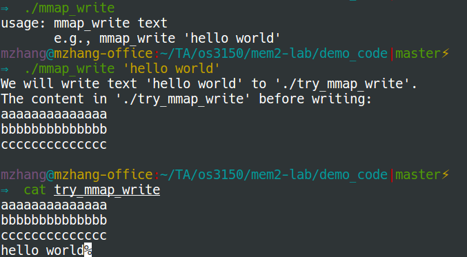

Write to file
#include <stdio.h>
#include <stdlib.h>
#include <string.h>
#include <fcntl.h>
#include <unistd.h>
#include <sys/types.h>
#include <sys/mman.h>
#include <sys/stat.h>
#include <errno.h>
int main(int argc, char *argv[]) {
char * map;
int fd, offset = 0;
struct stat fileInfo;
size_t fileSizeOld, fileSizeNew, textSize;
// usage of running this program
if (argc != 2) {
fprintf(stderr, "usage: mmap_write text\n");
fprintf(stderr, " e.g., mmap_write 'hello world'\n");
exit(1);
}
const char *text = argv[1];
const char *filePath = "./try_mmap_write";
printf("We will write text '%s' to '%s'.\n", text, filePath);
// Open a file for writing.
// Creating the file if it doesn't exist.
if ((fd = open(filePath, O_RDWR | O_CREAT, (mode_t)0664 )) == -1) {
perror("open");
exit(1);
}
if (stat(filePath, &fileInfo) == -1) {
perror("stat");
exit(1);
}
// If the file is not empty, show its content
if (fileInfo.st_size != 0) {
map = mmap(0, fileInfo.st_size, PROT_READ, MAP_SHARED, fd, 0);
if (map == MAP_FAILED) {
close(fd);
perror("mmap");
exit(1);
}
printf("The content in '%s' before writing:\n", filePath);
while (offset < fileInfo.st_size) {
printf("%c", map[offset]);
offset++;
}
printf("\n");
if (munmap(map, fileInfo.st_size) == -1) {
close(fd);
perror("Error un-mmapping the file");
exit(1);
}
}
// Stretch the file size to write the array of char
fileSizeOld = fileInfo.st_size;
// printf("old: %zu\n", fileSizeOld);
textSize = strlen(text);
fileSizeNew = fileInfo.st_size + textSize;
// printf("new: %zu\n", fileSizeNew);
if (ftruncate(fd, fileSizeNew) == -1) {
close(fd);
perror("Error resizing the file");
exit(1);
}
// mmap to write
map = mmap(0, fileSizeNew, PROT_READ | PROT_WRITE, MAP_SHARED, fd, 0);
if (map == MAP_FAILED) {
close(fd);
perror("mmap");
exit(1);
}
for (size_t i = 0; i < textSize; i++) {
/* printf("Writing character %c at %zu\n", text[i], i); */
map[i+fileSizeOld] = text[i];
}
// Write it now to disk
if (msync(map, fileSizeNew, MS_SYNC) == -1) {
perror("Could not sync the file to disk");
}
// Free the mmapped memory
if (munmap(map, fileSizeNew) == -1) {
close(fd);
perror("Error un-mmapping the file");
exit(1);
}
// Un-mmaping doesn't close the file, so we still need to do that
close(fd);
return 0;
}
Here is the output: 
References: